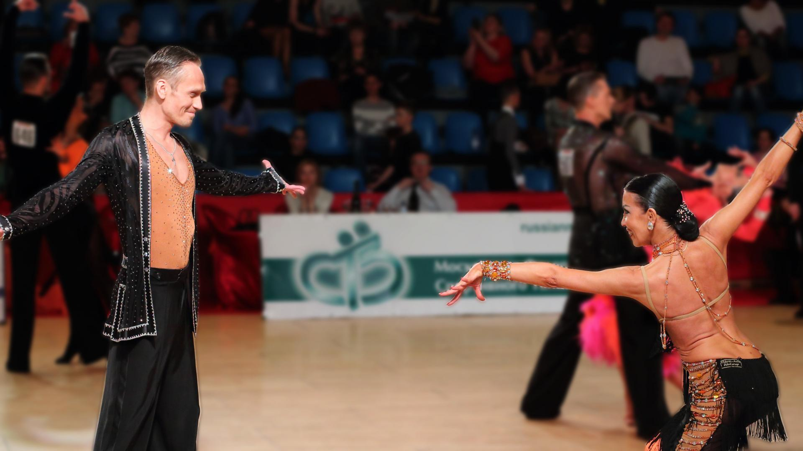

Спортивно бальные танцы, наверное, самый грациозный и эстетичный вид спорта. Именно вид спорта, несмотря на то, что именуется танцами. Это спорт, требующий немалых затрат силы и энергии. Соревнования по спортивным танцам, всевозможные чемпионаты, конкурсы по бальным танцам держат танцоров в тонусе и форме, учат выдержке и хладнокровию, воспитывают силу воли и веру в победу.
И в то же время это искусство, завораживающе красивое. Наблюдать за танцующей парой — ни с чем не сравнимое удовольствие.

. Бальный танец — это книга, которую хочется прочитать на одном дыхании. Это музыка, которая обволакивает и уносит далеко-далеко в мир грез и мечтаний. Бальный танец — это спектакль, в котором задействовано только два актера — мужчина и женщина. Он рассказывает о чувствах, страсти, взаимоотношениях пары. И потому всегда актуален и современен.